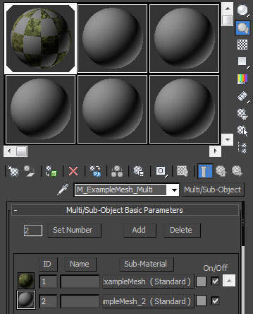
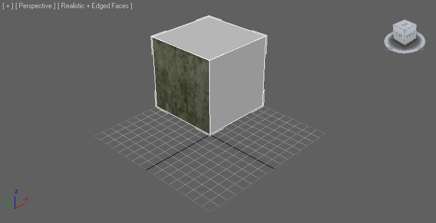
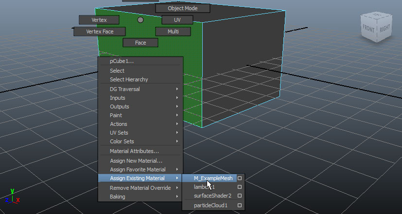
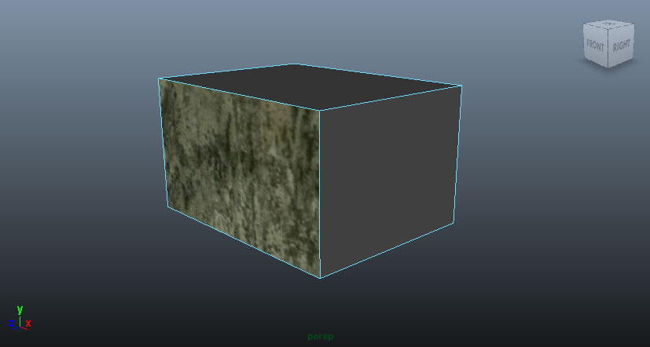
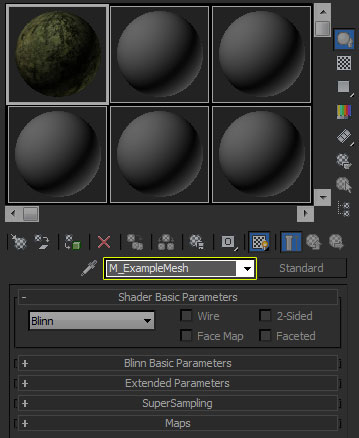
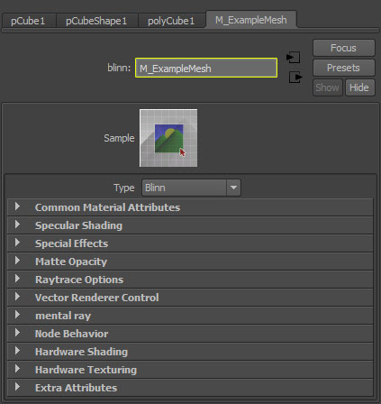
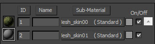
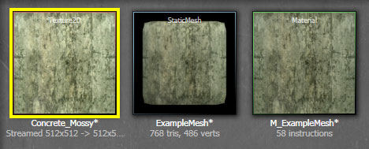
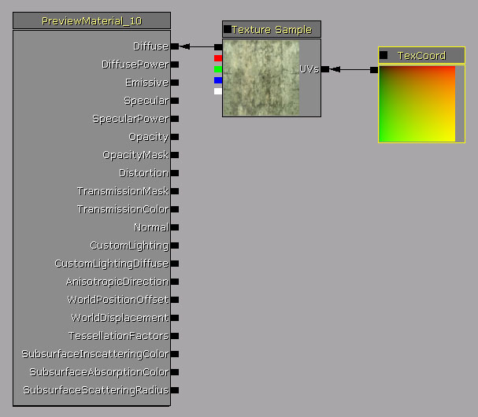
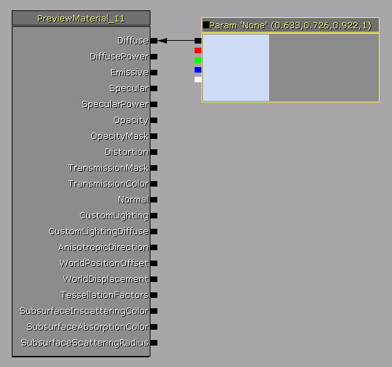

FBX Material Pipeline
Overview
The FBX pipeline has the ability to transfer materials and textures applied to meshes (both static meshes and skeletal meshes) in 3D applications into Unreal. Simple materials can be converted by importing the textures used in those materials, creating materials in UnrealEd with those textures hooke dup to the appropriate channels, and then applying the materials to the imported meshes. This simplifies and streamlines the mesh import process by automating what used to be a tedious manual process.
 IMPORTANT: As of September 2011 the UE3 FBX import pipeline uses FBX 2012. Using a different version during export may result in incompatibilities.
IMPORTANT: As of September 2011 the UE3 FBX import pipeline uses FBX 2012. Using a different version during export may result in incompatibilities.
Material Support
Only basic materials are supported for importing through the FBX pipeline. The types of materials which can be transferred are:
3dsMax
- Standard
- Multi/Sub-Object
Maya
- Surface
- Anisotropic
- Blinn
- Lambert
- Phong
- Phone E
In addition to the types of materials being able to be transferred, only specific features of those materials are transferred. The FBX material pipeline does not transfer individual settings, but it does support the transfer of certain maps or textures used within the materials. Currently, the supported maps (textures) which are imported and properly connected in materials are:
| Map/Texture | 3dsMax Setup | Maya Setup |
|---|
| Diffuse | Diffuse > Bitmap | Color > File |
| Emissive | Self-illumination > Bitmap | Incandescence > File |
| Specular | Specular Level > Bitmap | Specular Color > File |
| Specular Power | Glossiness > Bitmap | Cosine Power > File |
| Normal Map | Bump > Normal Bump > Normal > Bitmap | Bump > File |
Multiple Materials
Meshes can have multiple materials applied to them, each covering certain faces of the mesh. The FBX pipeline has the ability to handle the import of meshes with multiple materials, assuming they have been set up correctly in the 3D application.
3dsMax
In 3dsMax, multiple materials are handled by the use of a Multi/Sub-Object material. Each face of a mesh has a Material ID and each Standard material within the Multi/Sub-Object material is applied to the corresponding Material ID.


A material will be created in Unreal Editor for each of the Standard materials within the Multi/Sub-Object material and the imported mesh will have material slots for each of these materials. When applied to the mesh, the materials will only affect the corresponding polys of the mesh, just as they did in 3dsMax.
Maya
Maya is pretty straightforward when it comes to the use of multiple materials on a mesh. You simply select the faces of the mesh you want to have the material applied to and then apply the material.


A material will be created in Unreal Editor for each material applied to the mesh in Maya and the imported mesh will have material slots for each of these materials. When applied to the mesh, the materials will only affect the corresponding polys of the mesh, just as they did in Maya.
Material Naming
The materials which are created in Unreal Editor will be named the same as the materials in the 3D application. Where the name is pulled from depends on which application the mesh is being exported from.
3dsMax
For 3dsMax, the material name in Unreal Editor is transferred directly from the name of the material applied to the mesh in 3dsMax.

Maya
For Maya, the material name in Unreal Editor is transferred from the name of the shading engine applied to the mesh in Maya.

Material Ordering
When the order of the materials applied to the mesh is important, you can specify a particular order by using a special naming convention for the materials. By default, the materials will be created in Unreal Edtior randomly so there is no guarantee as to what order the materials will be. This can be a problem, for example, when dealing with characters when your character system relies on the body material being the first material, the head material being the second materials, etc.
Unreal uses the skin** naming convention to specify ordering for materials. This can be the entirety of the name of the material or appended onto the existing name of the material. It just has to be found within the name of the material.
So, if you have two materials that need to be ordered consistently, you might have them named:
-
M_ExampleMesh_skin00
-
M_ExampleMesh_skin01

Texture Import
If the material has a texture assigned as either the diffuse or normal map in the 3D application, those textures will be imported into UnrealEd as long as the Import Textures setting is enabled in the FBX Import Properties.

A Texture Sample expression will be created in the newly created material in Unreal Editor and the imported texture will be assigned to that Texture Sample. A Texture Coordinate expression will also be added to the material and connected to the UVs input of the Texture Sample.

If the textures applied to the material in the 3D application are in a format that is not compatible with Unreal, they will not be imported. In this case, and also if no textures we present in the material to begin with, the material in Unreal Editor will be populated with a randomly colored Vector Parameter.

Important!
You are viewing documentation for the Unreal Development Kit (UDK).
If you are looking for the Unreal Engine 4 documentation, please visit the Unreal Engine 4 Documentation site.